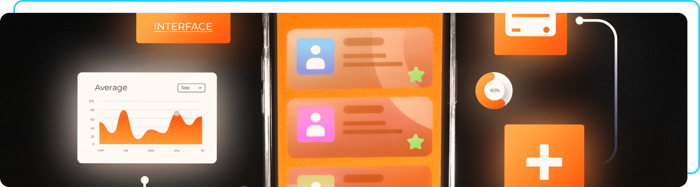
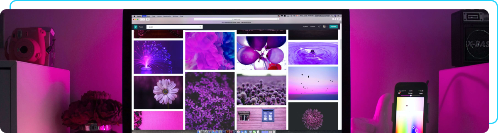

Eleve seu negócio digital a outro nível com um Front-end de qualidade!
Olá! Sou Joana Santos, desenvolvedora Front-end com especialidade em React, HTML e CSS. Ajudo pequenos negócios e designers a colocarem em prática boas ideias. Vamos conversar?
Sobre mim
Olá! Sou Joana Santos, uma desenvolvedora Front-end apaixonada por criar experiências visuais cativantes na web. Minha jornada no mundo do desenvolvimento se baseia na busca pela harmonia entre design e código, e desde então, dedico minha carreira a aprimorar essa integração.
Com foco na usabilidade e design responsivo, adoro contribuir com soluções que transcendem as expectativas dos usuários.
Vamos transformar ideias em realidade juntos!
Meus projetos
E-commerce
Desenvolvi um front-end envolvente e responsivo para uma plataforma de e-commerce, com design moderno e intuitivo. Utilizei HTML5, CSS3 e JavaScript para criar uma interface interativa, garantindo navegação fluida e destaque visual aos produtos. A otimização para dispositivos móveis e atenção aos detalhes visuais foram cruciais para aprimorar a usabilidade e oferecer uma experiência de compra agradável.
Clique para ver o projeto no Github
Aplicativo Gestão de Tarefas

Desenvolvi o front-end de um app de gestão de tarefas, priorizando simplicidade e eficiência com React e Redux. A interface é dinâmica e intuitiva, permitindo organização fácil com recursos como arrastar e soltar. A responsividade foi essencial para uma experiência consistente em dispositivos móveis e desktops, resultando em um ambiente digital que otimiza a organização pessoal e aumenta a produtividade.
Clique para ver o projeto no Github
E-commerce

Desenvolvi o front-end de um blog, com ênfase na elegância e facilidade de uso. Utilizei HTML, CSS e JavaScript para criar uma interface responsiva e limpa, tornando a leitura e a interação intuitivas em vários dispositivos. Destaquei recursos de carregamento dinâmico e um sistema de comentários interativo para promover a experiência do usuário.
Clique para ver o projeto no Github